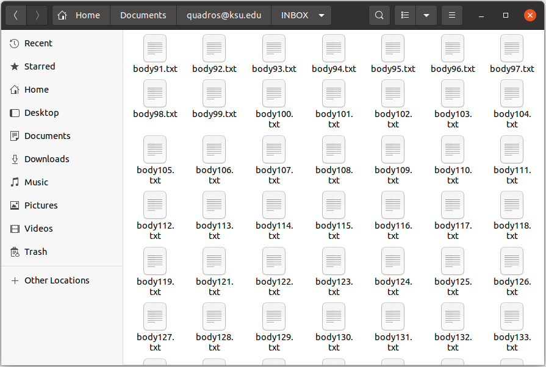
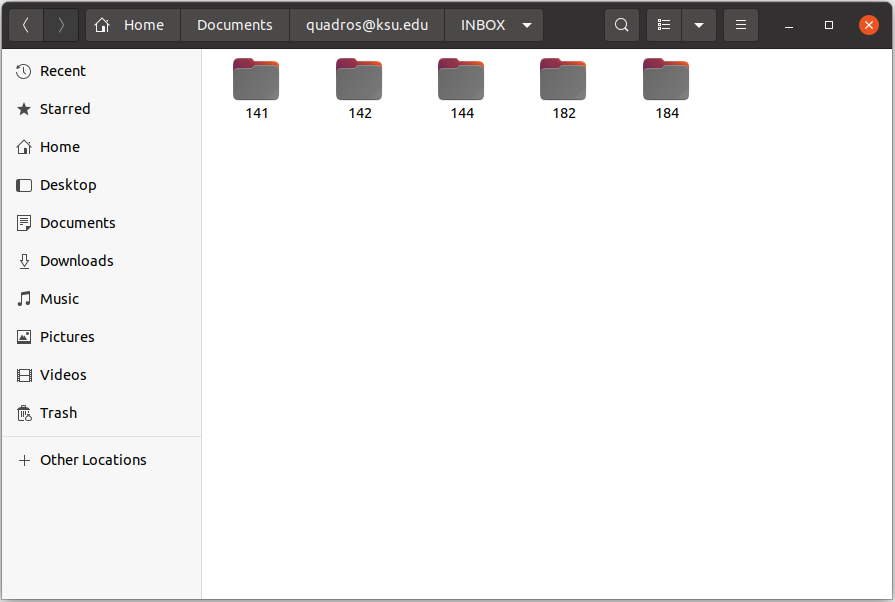
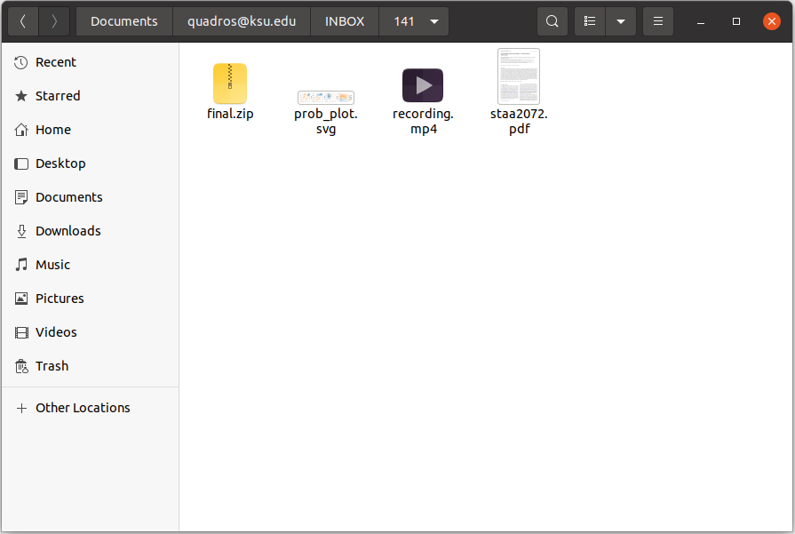

mRpostman is an easy-to-use IMAP client that provides tools for message searching, selective fetching of message attributes, mailbox management, attachment extraction, and several other IMAP features, paving the way for email data analysis in R. To do so, this package makes extensive use of the {curl} package and the libcurl C library.
In this vignette, we present all available methods and functions of this package, but not all the possibilities one can explore.
IMPORTANT:
In version 0.9.0.0, mRpostman went through substantial changes, including ones that have no backward compatibility with versions <= 0.3.1. If you have code written with the deprecated syntax of versions <= 0.3.1, please refer to the package’s NEWS.md file for an overview of the changes introduced in 0.9.0.0.
Old versions of the libcurl C library ({curl}’s main engine) will cause malfunctioning of this package. If your libcurl’s version is above 7.58.0, you should be fine. If you intend to use OAuth 2.0 authentication, then you will need libcurl >= 7.65.0. To know more about the OAuth 2.0 authentication in this package, refer to the “Using IMAP OAuth2.0 authentication in mRpostman” vignette.
Most mail providers discontinued less secure apps access. If it is still available and you are comfortable with this type of access you can enable this option for your account on your mail provider. Some providers, such as Yahoo Mail, also offer the option to generate a password to be used by third-party apps such as mRpostman. The other option, as mentioned above, is to set up OAuth2 (two-factor authentication) in order to access your mailbox. Please also refer to the “Using IMAP OAuth2.0 authentication in mRpostman” vignette.
| Provider | IMAP Server |
|---|---|
| Gmail | imap.gmail.com |
| Office 365 |
outlook.office365.com* |
| Outlook.com (Hotmail and Live.com) | imap-mail.outlook.com |
| Yahoo Mail | imap.mail.yahoo.com |
| iCloud Mail | imap.mail.me.com |
| AOL Mail | imap.aol.com |
| Zoho Mail | imap.zoho.com |
| Yandex Mail | imap.yandex.com |
| GMX Mail | imap.gmx.com |
| Mail.com | imap.mail.com |
| FastMail | imap.fastmail.com |
* For Office 365 accounts, the username should be set as user@yourcompany.com or user@youruniversity.edu for example.
The package is now implemented under an OO framework, using an R6 class. The main functionalities of mRpostman are implemented as methods of the R6 class called ImapCon. There are also a few independent functions. All methods and functions are described below:
configure_imap(), reset_url(), reset_username(), reset_password(), reset_verbose(), reset_buffersize(), reset_timeout_ms(), reset_xoauth2_bearer();list_server_capabilities();list_mail_folders(), select_folder(), examine_folder(), rename_folder(), create_folder(), list_flags();search_before(), search_since(), search_period(), search_on(), search_sent_before(),search_sent_since(), search_sent_period(), search_sent_on(), search_string(), search_flag(), search_smaller_than(), search_larger_than(), search_younger_than(), search_older_than();search();
AND(), OR();before(), since(), on(), sent_before(), sent_since(), sent_on(), string(), flag(), smaller_than(), larger_than(), younger_than(), older_than();fetch_body(), fetch_header(), fetch_text(), fetch_metadata(), fetch_attachments_list(), fetch_attachments();list_attachments(), get_attachments(), fetch_attachments_list(), fetch_attachments();copy_msg(), move_msg(), esearch_min_id(), esearch_max_id(), esearch_count_msg(), delete_msg(), expunge(), add_flags(), remove_flags(), replace_flags().After setting the authentication method in your mail provider, you have to configure an IMAP connection:
library(mRpostman)
# IMAP settings
# Outlook - Office 365
con <- configure_imap(
url="imaps://outlook.office365.com",
username="user@your_company.com",
password=rstudioapi::askForPassword()
)
# Gmail
con <- configure_imap(
url = "imaps://imap.gmail.com",
username = "user",
password = rstudioapi::askForPassword()
)
# Hotmail
con <- configure_imap(
url = "imaps://imap-mail.outlook.com",
username = "user@hotmail.com",
password = rstudioapi::askForPassword()
)
# Yahoo Mail
con <- configure_imap(
url="imaps://imap.mail.yahoo.com/",
username="your_user",
password=rstudioapi::askForPassword()
)
# AOL Mail
con <- configure_imap(
url="imaps://export.imap.aol.com/",
username="your_user",
password=rstudioapi::askForPassword()
)
# Yandex Mail
con <- configure_imap(
url="imaps://imap.yandex.com",
username="your_user",
password=rstudioapi::askForPassword()
)
# ... and any other mail provider with IMAP supportOther useful options are: timeout_ms, verbose = TRUE, buffersize. Further {curl} options related to IMAP functionalities can be passed to configure_imap(), but you probably won’t need it. See curl::curl_options().
Since version 0.9.0.0, this package provides more flexibility to the user in the sense that you can modify the connection parameters for specific commands or parts of a script, using the reset_*() methods. This prevents users from having to call configure_imap() multiple times during a session or in a script. It is particularly useful when the user is going to perform some fetch operation, for example. In this case, it is recommended to increase the timeout_ms and set verbose = FALSE.
The con object that we created in the example above has the ImapCon R6 class. Now, almost 99% of the other IMAP commands to be performed on the server will be called following the structure: con$method(). The exceptions are the list_attachments() function and the helper functions of the custom-search group.
As you will see, the R6 framework combined with {curl} will make this package work like a session-based IMAP client. Besides this, for some commands, users will be able to use the tidy approach with pipes. All this together provides an elegant way of accessing your IMAP provider, searching and fetching emails, and managing your mailbox as well.
Once the connection is configured, it is important to know which capabilities your IMAP provider offers to users. This impacts on which type of operations you are allowed to perform. For example, if your server has the WITHIN extension you can use the WITHIN search methods search_younger_than() and search_older_than(); if the server has the ESEARCH capability, besides being allowed to use the esearch_*() methods, you can optimize all your search functions with the esearch = TRUE parameter; if you see the MOVE capability, then you can use the move_msg() method. Therefore, to know all your server capabilities, you can use list_server_capabilities.
con$list_server_capabilities()
con$create_folder(name = "New Folder")Except for examine_folder() and rename_folder(), from now on, you will have to select a folder to issue further commands.
con$select_folder(name = "INBOX")Probably, the main folder in your mailbox will be the "INBOX". You can select it without having to worry about the case of the letters. However, all the other folders in a mailbox are case sensitive.
Count the number of existent and recent messages in the previously selected folder.
con$select_folder(name = "Inbox")
con$examine_folder()If you want to examine a folder that is not the currently selected one (INBOX), you can achieve this by specifying the name.
con$examine_folder(name = "Sent")The following will rename the selected folder.
con$select_folder(name = "CRAN Messages")
con$rename_folder(new_name = "CRAN")There is a reselect argument, which by default is set to TRUE. This will cause the automatic re-selection of the new folder name.
If you want to rename a folder that is different from the currently selected one (CRAN), you can achieve this by specifying the name.
con$rename_folder(name = "Sent", new_name = "Sent2")Flags work like tags or labels attached to messages. After a mail folder is selected, you can check which flags are available, and if you are allowed to set custom flags of your own in this folder with list_flags().
con$list_flags()The following deletes a mail folder (IMAP “DELETE”). The folder name must be provided explicitly (there is no implicit deletion of the currently selected folder).
con$delete_folder(name = "Old Folder")subscribe_folder() adds a folder to the set of subscribed (active) folders (IMAP “SUBSCRIBE”).
con$subscribe_folder(name = "INBOX")unsubscribe_folder() removes a folder from the subscribed set (IMAP “UNSUBSCRIBE”).
con$unsubscribe_folder(name = "INBOX")While list_mail_folders() lists every folder (IMAP “LIST”), list_subscribed_folders() lists only the subscribed ones (IMAP “LSUB”).
con$list_subscribed_folders()status() returns a folder’s counters via IMAP “STATUS” without selecting it (unlike examine_folder()). You can request any subset of MESSAGES, RECENT, UIDNEXT, UIDVALIDITY, and UNSEEN.
con$status(name = "INBOX")
# or only some items, for the currently selected folder:
con$select_folder("INBOX")
con$status(items = c("MESSAGES", "UNSEEN"))Servers advertising the “SPECIAL-USE” capability (RFC 6154) tag folders with a role such as \Sent, \Drafts, \Junk, \Trash, \Archive, \All, or \Flagged. list_special_use_folders() returns a data.frame mapping each such folder to its attribute.
con$list_special_use_folders()namespace() issues the IMAP “NAMESPACE” command (RFC 2342), returning the personal, other users’, and shared namespace prefixes and their hierarchy delimiters.
con$namespace()On servers advertising the “QUOTA” capability (RFC 2087), get_quota_root() returns the quota root(s) of a folder and their usage/limits as a data.frame (STORAGE is reported in kibibytes). If you already know the quota root, get_quota() queries it directly.
con$get_quota_root(name = "INBOX")
# or, for a known quota root:
con$get_quota(quota_root = "")close_folder() closes the selected folder (IMAP “CLOSE”), permanently removing the messages flagged \Deleted. unselect_folder() (IMAP “UNSELECT”, RFC 3691) does the same without expunging. After either, no folder is selected.
con$select_folder("INBOX")
con$close_folder() # closes and expunges \Deleted
# or:
con$unselect_folder() # closes without expungingid() issues the IMAP “ID” command (RFC 2971). Called without arguments it asks for the server’s id; you can also disclose the client id by passing a named vector.
con$id()
# optionally disclosing the client id:
con$id(fields = c(name = "mRpostman", version = "1.2.1"))All search methods will return a numeric vector containing the results from the search. This allows users to chain fetch operations together with search one. You can also NEGATE all search expressions by setting negate = TRUE.
If your server supports ESEARCH, we recommend you to use it. It will prevent your results from being truncated when there are too many message ids and you didn’t set a high buffersize in configure_imap()1. With “ESEARCH”, the results will be condensed to groups of sequences similar to what does. For instance, if your search returns 10000 results, it is better to have condensed groups such as 1:10, 12, 23:27, ... instead of a sequence of 1, 2, 3, 4, 5, 6, ..., 10, 12, 23, 24, 25, .... If you can’t use ESEARCH, or if your results are being truncated even with ESEARCH, you can try to increase your buffersize in configure_imap() to avoid this.
search_before(), search_since(), search_on(), and search_period() use internal date, which reflects the moment when the message was received. search_sent_before(), search_sent_since(), search_sent_on(), and search_sent_period() use the RFC-2822 date header (origination date), which “specifies the date and time at which the creator of the message indicated that the message was complete and ready to enter the mail delivery system” (Resnick, 2008). Dates in both methods must be the same most of the time. The difference may occur when you copied or moved some messages between folders. In this case, the RFC-2822 date header of the copied/moved messages in the destination folder will point out to the date of the copy. Another difference is that searching by the internal date will probably be faster because this information is kept in a database outside the message.
con$select_folder(name = "INBOX")
res <- con$search_before(date_char = "07-Sep-2020")
resYou can use the “UID” (unique identifier) instead of the message sequence number 2, and one or more flags as an additional filter to your search. In fact, you can use this in almost every search method of this package.
res <- con$search_before(date_char = "07-Sep-2020",
use_uid = TRUE,
flag = c("ANSWERED", "SEEN"))
resRemember that, if your IMAP server has the ESEARCH capability, you can use it. Gmail is one of the mail providers that allow it.
res <- con$search_before(date_char = "07-Sep-2020",
use_uid = TRUE,
flag = c("ANSWERED", "SEEN"),
esearch = TRUE)
resYou can also NEGATE the statement to search for messages NOT BEFORE a date, for example:
res <- con$search_before(date_char = "07-Sep-2020",
negate = TRUE,
use_uid = TRUE)
resThe previous operation, in which we have used negate = TRUE, is equivalent to search for messages received SINCE a DATE:
res <- con$search_since(date_char = "07-Sep-2020",
use_uid = TRUE)
res
res <- con$search_period(since_date_char = "02-Jan-2020",
before_date_char = "30-Jun-2020")
resYou can NEGATE a period search as well. In this case, the search will exclude messages from the specified period.
res <- con$search_period(since_date_char = "02-Jan-2020",
before_date_char = "30-Jun-2020",
negate = TRUE)
res
con$search_sent_before(date_char = "07-Sep-2020")You can modify some of the search parameters as well:
res <- con$search_sent_before(date_char = "07-Sep-2020",
negate = TRUE,
use_uid = TRUE,
flag = c("ANSWERED", "SEEN"))
resYou can search for a simple string or compound expression either in the whole message, in a section, or in a specific header field. One important thing to know is that the SEARCH command in the IMAP server is not case sensitive.
You can also NEGATE the statement and search for messages (or a specific part of a message) not containing that string, and add additional flag filters as well.
For the next examples, we are going to select a different mail folder.
Searching in the “TO” header field:
con$select_folder(name = "K-State")
con$search_string(expr = "xpto@k-state.com", where = "TO")Searching in the “FROM” header field:
con$search_string(expr = "xpto@k-state.edu", where = "FROM")Searching in the “SUBJECT” header field:
con$search_string(expr = "PhD offer", where = "SUBJECT")Searching in the “TEXT” section.
IMPORTANT: Since the text may contain raw data, it may not be a super-effective search. In this case, searching for an expression in the whole "BODY" may be preferred.
con$search_string(expr = "Dear Allan" where = "TEXT")Searching in the “BODY” section.
con$search_string(expr = "Dear Allan" where = "BODY")
con$search_flag(name = c("ANSWERED", "Seen"), use_uid = TRUE)Remember that you can check the available flags in a mail folder with list_flags().
Servers with support to the “WITHIN” EXTENSION enable searching for messages within a span, i.e. younger than “x” seconds, or older than “x” seconds. This capability is really rare to find in IMAP servers, but mRpostman has two methods implemented for coping with this capability if it is available.
Servers advertising the “SORT” capability (RFC 5256) can order the results on the server side. sort() returns the message ids in the server-provided order (it does not re-sort them locally). Check the capability with list_server_capabilities().
con$select_folder(name = "INBOX")
# most recent first:
con$sort(by = "DATE", reverse = TRUE)
# sort a restricted set (search criteria) by sender:
con$sort(by = "FROM", criteria = "SINCE 01-Jan-2020")Servers advertising a “THREAD=” capability (RFC 5256) can group messages into threads. thread() returns a list of integer vectors, one per top-level thread (nested parent/child ids are flattened into their thread).
con$select_folder(name = "INBOX")
con$thread(algorithm = "REFERENCES")The search() method and its helper functions enable users to create a vast number of complex and customized search requests by combining different criteria, using all the types of searches previously presented in this document.
These are the helper functions you can use inside search():
AND(), and OR();before(), since(), on(), sent_before(), sent_since(), sent_on(), string(), flag(), smaller_than(), larger_than(), younger_than(), and older_than().NOTE: IMAP queries follow Polish notation, i.e. operators such as OR come before arguments, e.g. “OR argument1 argument2”. Therefore, the relational operators functions in this package should be used like the following examples: OR(before(date_char = "17-Apr-2015"), string(expr = "Jimmy", where = "FROM")). Even though there is no “AND” operator in the IMAP protocol, this package adds a helper function AND() to indicate multiple arguments that must be searched together, e.g. AND(since(date_char = "01-Jul-2018"), larger_than(size = 16000)).
Example 1: Searching for messages (in “INBOX”) containing the string “Kansas State University” in the “SUBJECT” header field AND that were received before “02-Jan-2020”.
con$select_folder(name = "INBOX")
res <- con$search(request = AND(string(expr = "Kansas State University", where = "SUBJECT"),
before(date_char = "02-Jan-2020")))
resExample 2: Searching (using UID) for messages received from “@k-state.edu” OR “@ksu.edu”.
You can fetch the full content of messages, or their parts, such as the header, text, or specific metadata fields. Besides this, you can also fetch a message attachments list or the attachment files themselves, downloading them to the disk.
We usually fetch messages after a search operation. Given the output of the search functions in mRpostman, you can use the pipe %>% to chain the search and the fetch operations together. Using the base R approach is perfectly possible as well.
In the main fetch methods (those that are not related to attachment fetching), you can choose to write the fetch results to disk (working directory) using write_to_disk = TRUE. If you opt to do so, mRpostman saves the fetched content to a .txt file in the following folder structure: working directory > imap.server.url > mail folder name. The text files will be named after the id of the fetched message. If the operation was executed using the UID, the “UID” prefix is added to the file names.
IMPORTANT:
If the fetch operation is to be chained after a search, the use_uid arguments in the two operations have to be the same. Otherwise, an error will occur or the fetch will be performed on wrong messages’ ids.
It is always recommended to increase the timeout_ms before fetch_body(), fetch_text(), and fetch_attachments() operations as sometimes the operation may hang for a few seconds while fetching the message parts.
if you have configured a connection with verbose = TRUE, it is extremely recommended that you reset it to FALSE before a fetching operation. The verbose = TRUE option fills the console with the whole flux of information between the server and the client, drastically slowing the speed of the process and your R session.
# increasing timeout_ms
con$reset_timeout_ms(x = 30000) # ... to 30 secs
# and supposing that you had verbose = TRUE before
con$reset_verbose(x = FALSE)
# tidy approach
con$search_string(expr = "@k-state.edu", where = "FROM") %>%
con$fetch_body(write_to_disk = TRUE, keep_in_mem = FALSE)
# ---------------
# base R approach
res <- con$search_string(expr = "@k-state.edu", where = "FROM")
con$fetch_body(msg_id = res, write_to_disk = TRUE, keep_in_mem = FALSE)Since the goal here is to write the fetch results to disk, it is recommended that we set keep_in_mem = FALSE. This will optimize the whole operation because mRpostman will clean the memory after fetching each message as we are not going to use the results in our R session.
Our local folder will be populated with the .txt files of the fetched messages:

# tidy approach
out <- con$search_since(date_char = "15-Aug-2019", use_uid = TRUE) %>%
con$fetch_header(use_uid = TRUE, fields = c("DATE", "SUBJECT"))
out
# ---------------
# base R approach
res <- con$search_since(date_char = "15-Aug-2019", use_uid = TRUE)
out <- con$fetch_header(use_uid = TRUE, fields = c("DATE", "SUBJECT"))
outPlease, note that, in the example above, we are saving the results to the out object in our R session. Also note that we are setting use_uid = TRUE in both search and fetch requests.
fetch_text() is almost as costly as fetch_body(). So, it is a good idea to keep a “high” timeout_ms.
con$search_since(date_char = "15-Aug-2019") %>%
con$fetch_text(write_to_disk = TRUE, keep_in_mem = FALSE)
out <- con$search_on(date_char = "15-Aug-2019", use_uid = TRUE) %>%
con$fetch_metadata(use_uid = TRUE, attribute = c("INTERNALDATE", "UID", "ENVELOPE"))If nothing is specified to the metadata argument, all the metadata fields are fetched by default. To know which are the metadata options of a message, refer to metadata_options().
There are two more fetch methods, but they are going to be presented in the next session since they are related to a very special fetch operation.
Previously, mRpostman had two attachment-related functions: list_attachments() and get_attachments(). Both were to be used after a fetching operation because they would use the content fetched in a previous step to parse the attachments list and/or decode the content to files. These methods are still available in the current version of the package. However, two more methods were implemented since version 0.9.0.0: fetch_attachments_list() and fetch_attachments(). These methods are not contingent on a previous fetch operation, since they are a proper fetch operation.
Let’s take a look at the first two attachments functionalities available in mRpostman.
The dependent operations are comprised of a function list_attachments() and an R6 method get_attachments(). We call them dependent operations because they depend on a previous fetch operation with fetch_body() or fetch_text().
IMPORTANT: Since these are fetch-dependent operations, you cannot set keep_in_mem = FALSE in the fetch_body()/fetch_text() step if you intend to list or get attachments after fetching your messages.
This will list your attachments file names for each fetched message.
# using fetch_body()
con$search_since(date_char = "23-Sep-2019") %>%
con$fetch_body(write_to_disk = TRUE) %>%
list_attachments() # don't need to specify the connection object here
# ------------------
# using fetch_text()
con$search_since(date_char = "23-Sep-2019") %>%
con$fetch_text(write_to_disk = TRUE) %>%
list_attachments() # don't need to specify the connection object hereIn both examples, the whole message body(ies) or text will be saved to the disk, but a copy will be kept in the R session. This copy is passed forward to list_attachments(), which, by its turn, finds and extracts the filenames and the type of the “Content-Disposition” for the part where the attachment was found.
get_attachments() will try to decode base64 text inside your message to the appropriate file extension. This will create a folder inside the structure working directory > username > mail folder > msg_id. The attachment(s) will be inside their respective message folder.
# using fetch_body()
con$search_since(date_char = "23-Sep-2019") %>%
con$fetch_body(write_to_disk = TRUE) %>%
con$get_attachments()
# ------------------
# using fetch_text()
con$search_since(date_char = "23-Sep-2019") %>%
con$fetch_text(write_to_disk = TRUE) %>%
con$get_attachments()The results in your local folder will be like this:


As we stated before, the following two methods are not contingent on a previous fetch step because they execute their own fetching operation. Hence, they consist of an alternative for attachments listing and downloading.
IMPORTANT: The same recommendations for the other fetch methods hold in this case: set verbose = FALSE and a high timeout_ms.
con$search_since(date_char = "23-Sep-2019") %>%
con$fetch_attachments_list()
con$search_since(date_char = "23-Sep-2019") %>%
con$fetch_attachments()Here we present other functions to perform very useful complementary IMAP operations.
Copying search results from “INBOX” to “K-State” folder:
con$select_folder(name = "INBOX")
con$search_since(date_char = "10-may-2019") %>%
con$copy_msg(to_folder = "K-State")It will automatically re-select the destination folder unless the user sets reselect = FALSE.
This operation depends on the ESEARCH capability. It will retrieve the minimum message id containing a specific flag(s) in the selected mail folder.
con$esearch_min_id(flag = c("Answered", "Seen"))This operation also depends on the ESEARCH capability. It will retrieve the maximum message id containing a specific flag(s) in the selected mail folder.
con$esearch_min_id(flag = c("Answered", "Seen"))This operation also depends on the ESEARCH capability. It will retrieve the number of messages with a specific flag(s) in the selected mail folder.
con$esearch_count(flag = c("Answered", "Seen"))This method marks one or more messages with the “\Deleted” system flag. Some servers automatically delete messages marked with this flag, and others require the EXPUNGE command to permanently delete the e-mail.
con$select_folder(name = "Trash")
con$search_before(date_char = "10-may-2012") %>%
con$delete_msg()Deleting an specific “msg_id” without a previous search:
con$delete_msg(msg_id = 66128)Expunges message(s) marked with the “DELETED” flag in a mailbox or a specific message using the msg_uid argument. Please, note that this requires the unique id, not sequence numbers. Therefore, we set use_uid = TRUE
# expunge the entire mail folder
con$expunge()
# expunge selected msg UID
con$delete_msg(msg_id = 71171, use_uid = TRUE) %>%
expunge()Adding, removing and replacing one or more flags to messages.
IMPORTANT: Differently from the search functions where the (system) flags passed as additional parameters to search methods did not contain “\”, the add/replace/remove_flags() methods require the double backslash when referring to system flags. You can know which are the flags of a mail folder, and if custom flags are allowed, using list_flags().
con$select_folder(name = "INBOX")
con$search_since(date_char = "01-Sep-2020", use_uid = TRUE) %>%
con$add_flags(flags_to_set = "\\Answered", use_uid = TRUE)move_msg() uses IMAP “MOVE” EXTENSION. Check if your server supports the “MOVE” capability with list_server_capabilities().
con$search_on(date_char = "07-Sep-2020") %>%
con$move_msg(to_folder = "K-State")If your server does not provide “MOVE” capability, the same result can be achieved with a combination of copy_msg, add_flags() and expunge():
noop() issues the IMAP “NOOP” command. It does nothing on the server other than resetting the inactivity autologout timer, which makes it useful as a keep-alive during long idle periods.
con$noop()Note on IDLE: the IMAP “IDLE” command (RFC 2177) — which lets a client wait for the server to push notifications of new messages in real time — is not supported by mRpostman. IDLE is a long-lived command that holds the connection open until the client sends “DONE”, which does not fit the one-shot request/response model of the underlying libcurl library. To detect new messages, poll periodically instead: call noop() (to refresh the connection) followed by examine_folder() or status() and compare the counts.
append_msg() uploads a full RFC 822 message to a folder (IMAP “APPEND”), which is handy to save a message to Drafts or Sent. The message is stored with the server’s default flags.
msg <- paste("From: me@example.com",
"To: you@example.com",
"Subject: Hi",
"",
"Message body.",
sep = "\r\n")
con$append_msg(message = msg, folder = "Drafts")Since 2.3.0 a search can be written as an ordinary R expression. query() captures the expression unevaluated, translates it into the same RFC 3501 search string through the pure function imap_query(), and executes it exactly like search():
con$query((subject == "budget" | "budget 3") & flag != "SEEN")
con$query(sent >= "2001-10-01" & sent < "2002-01-01" & size > 5e6, use_uid = TRUE)
con$query(subject %in% c("budget", "forecast") & age < 7 * 86400)Fields: subject, from, to, cc, bcc, body, text (where == means contains, as the protocol defines), flag (system flags and custom keywords), size in bytes, age in seconds, the date fields sent, date (internal date), and saved (on SAVEDATE servers), and header("Name"). Comparisons combine with &, |, !, %in%, and parentheses, with R’s usual precedence; anything else, variables included, is evaluated in your environment. A bare string next to | or & inherits the field of the preceding comparison, which is what makes subject == "budget" | "budget 3" work. imap_query() shows the translation without a server:
imap_query((subject == "budget" | "budget 3") & flag != "SEEN")
#> <imap_search> ((OR (SUBJECT "budget") (SUBJECT "budget 3")) (UNSEEN))The criterion constructors of the previous section also gained the native operators: string("budget", where = "SUBJECT") & !flag("SEEN") is equivalent to AND(string("budget", where = "SUBJECT"), flag("SEEN", negate = TRUE)).
Versions 1.5.0 to 1.5.2 completed the IMAP4rev1 command set (CHECK) and added a set of optional extensions. Each one is checked against the server’s CAPABILITY response before the command is issued, so an unsupported extension fails with a message naming the command, its RFC, and list_server_capabilities(). The Docker sandbox (see the sandbox vignette) supports all of them.
With UIDPLUS (RFC 4315), append_msg() returns the UID the server assigned to the message, and copy_msg()/move_msg() attach the source-to-destination UID mapping as the "copyuid" attribute of their result. append_msg() also gained a flags argument.
list_folders_status() (LIST-STATUS, RFC 5819) returns every selectable folder with its counters, and list_mail_folders(detailed = TRUE) (LIST-EXTENDED, RFC 5258) returns the folder attributes. status() accepts the SIZE (STATUS=SIZE, RFC 8438) and HIGHESTMODSEQ (CONDSTORE, RFC 7162) items.
con$list_folders_status(items = c("MESSAGES", "UNSEEN", "SIZE"))
con$list_mail_folders(detailed = TRUE)With search(save = TRUE) (RFC 5182) the result stays on the server and the method returns the "$" reference, which the fetch, flag, copy, move, and delete methods accept as msg_id. No message id crosses the wire.
con$search(request = AND(flag("UNSEEN"), sent_since(date_char = "01-Jan-2026")),
save = TRUE)
previews <- con$fetch_preview(msg_id = "$") # PREVIEW, RFC 8970
con$add_flags(msg_id = "$", flags_to_set = "\\Seen")fetch_preview() returns the short snippet the server generates for each message (PREVIEW, RFC 8970), without transferring the body. fetch_metadata() accepts the PREVIEW, SAVEDATE (RFC 8514), and MODSEQ (RFC 7162) attributes, and the criteria saved_before(), saved_since(), saved_on(), and modseq() extend the custom search. The last one, together with status(items = "HIGHESTMODSEQ"), answers “what changed since the last run”:
last <- con$status(items = "HIGHESTMODSEQ")[["HIGHESTMODSEQ"]]
# ... in a later session:
changed <- con$search(request = modseq(last + 1))sort(return = ...) (RFC 5267) asks the server for the COUNT, MIN, MAX, or ALL items of the sorted set instead of the full id vector:
con$sort(by = "SIZE", reverse = TRUE, return = c("COUNT", "MAX"))get_acl(), set_acl(), delete_acl(), list_rights(), and my_rights() implement the ACL extension (RFC 4314); set_quota() implements SETQUOTA (RFC 9208), which most servers restrict to administrators. enable() (RFC 5161) enables extensions that require it.
con$my_rights(name = "INBOX")
con$set_acl(name = "Shared", identifier = "user=bob", rights = "lrs")
con$get_acl(name = "Shared")Two operations cannot be expressed as one libcurl request: IDLE (RFC 2177), which parks the connection while the server pushes notifications, and commands that carry several literals, such as MULTIAPPEND (RFC 3502). For them, mRpostman opens a second, dedicated connection through libcurl’s CONNECT_ONLY mode (libcurl still performs the TLS handshake and certificate verification) and speaks IMAP directly on that socket. The main connection stays free.
idle() waits until something happens in the folder, or until timeout seconds elapse, and returns the events the server announced. A callback can stop the wait early, and the main connection can then fetch what arrived:
con$select_folder("INBOX")
ev <- con$idle(timeout = 600, callback = function(ev) !any(ev$type == "EXISTS"))
if (any(ev$type == "EXISTS")) {
con$fetch_envelope(msg_id = max(ev$id[ev$type == "EXISTS"]))
}append_msgs() uploads several messages in one command when the server advertises MULTIAPPEND, and one append_msg() at a time otherwise:
msgs <- vapply(1:3, function(i) paste0("Subject: m", i, "\r\n\r\nbody ", i, "\r\n"), "")
uids <- con$append_msgs(msgs, folder = "Archive", flags = "Seen")Since 2.1.0 the same layer serves notify() (RFC 5465: events for several folders at once), fetch_binary() (RFC 3516: attachments decoded by the server), append_catenate() (RFC 4469: a message assembled on the server from imap_url() parts and new text), and, on every one of them, compress = TRUE (RFC 4978):
ev <- con$notify(mailboxes = "personal", timeout = 600) # STATUS lines for any folder that changes
pdf <- con$fetch_binary(msg_id = 3, part = "2") # bytes, already decoded by the server
con$append_catenate(parts = list("Subject: Fwd\r\n\r\n", imap_url("INBOX", uid = 12, section = "TEXT")),
folder = "Archive")Version 2.2.0 closes the sweep of the IANA capability registry. On servers that advertise the corresponding capability, sort(by = "DISPLAYFROM") (RFC 5957), thread(algorithm = "REFS"), and esearch_partial() (paged searching, RFC 9394 / RFC 5267) become available, while non-synchronizing literals (RFC 7888) and the APPENDLIMIT guard (RFC 7889) are applied automatically. The remaining registered capabilities are covered by experimental methods – esort_partial(), replace_msg(), fetch_objectid(), uid_batches(), esearch_multi(), unauthenticate(), language(), comparator(), genurlauth(), urlfetch(), fetch_convert(), fetch_annotation(), store_annotation(), and the fuzzy() and filter_stored() search criteria – which follow the RFC grammars but could not be exercised against a live server, since no widely deployed server advertises those capabilities.
The second connection needs the credentials again: they are kept in a private field of the connection object (never printed, not part of con_params) and cleared by disconnect(). For TLS, the URL must be imaps:// (STARTTLS is not available on the raw socket).
Babcock, N. (2016), Introduction to IMAP, Blog, May 2016, http.
Crispin, M. (2003), INTERNET MESSAGE ACCESS PROTOCOL - VERSION 4rev1, RFC 3501, March 2003, http.
Crispin, M. and Murchison, K. (2008), Internet Message Access Protocol - SORT and THREAD Extensions, RFC 5256, June 2008, http.
Gahrns, M. and Newman, C. (2003), IMAP4 Namespace, RFC 2342, May 2003, http.
Leiba, B. and Melnikov, A. (2011), IMAP LIST Extension for Special-Use Mailboxes, RFC 6154, March 2011, http.
Myers, J. (1997), IMAP4 QUOTA extension, RFC 2087, January 1997, http.
Showalter, T. (2003), IMAP4 ID extension, RFC 2971, October 2000, http.
Melnikov, A. (2004), Internet Message Access Protocol (IMAP) UNSELECT command, RFC 3691, February 2004, http.
Freed, N. and Borenstein, N. (1996), Multipurpose Internet Mail Extensions (MIME) Part Two: Media Types, RFC 2046, November 1996, http.
Gungor, A. (2018), Using IMAP Internal Date for Forensic Email Authentication, Articles, Forensic Focus, http.
Heinlein, P. and Hartleben, P. (2008). The Book of IMAP: Building a Mail Server with Courier and Cyrus. No Starch Press. ISBN 978-1-59327-177-0.
Resnick, P. (2001), Internet Message Format, RFC 2822, April 2001, http.
Resnick, P. (2008), Internet Message Format, RFC 5322, October 2008, http.
Ooms, J. (2020), curl: A Modern and Flexible Web Client for R. R package version 4.3, http.
Stenberg, D. Libcurl - The Multiprotocol File Transfer Library, http
This is a known bug of the libcurl library. Please, refer to this LINK↩︎
A message sequence number is a message’s relative position to the oldest message in a mail folder. It may change after deleting or moving messages. If a message is deleted, sequence numbers are reordered to fill the gap. If use_uid = TRUE, the command will be performed using the “UID” or unique identifier, and results are presented as such. UIDs are always the same during the life cycle of a message in a mail folder.↩︎